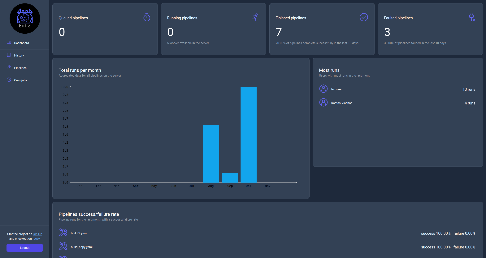
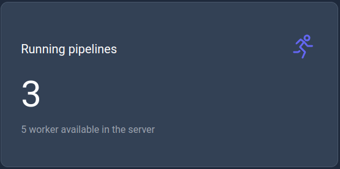
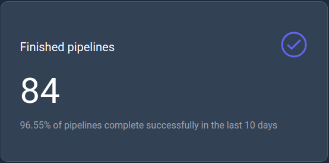
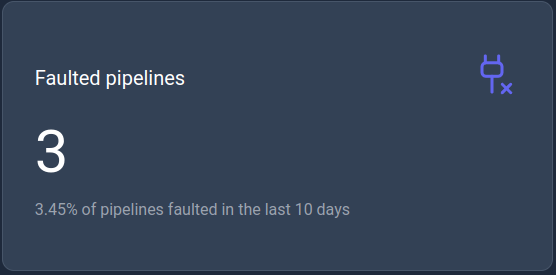
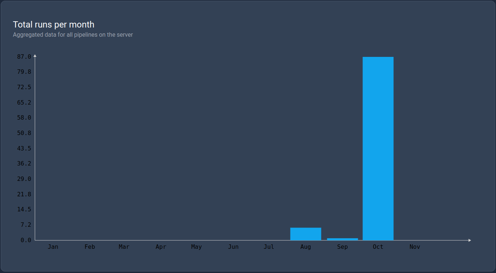

Dashboard page
The dashboard page (home page) will present to the user KPIs related to pipeline runs with each displaying a specific metrics for a specific time frame.

Queued pipelines
This KPI displays the current number of queued pipelines to run.

Running pipelines
This KPI displays the current number of running pipelines with the maximum capacity of worker configured for the server.

Finished pipelines
This KPI displays the number of successfully finished pipelines in the last 10 days.

Faulted pipelines
This KPI displays the number of faulted pipelines in the last 10 days.

Total runs per month
This KPI is a bar chart that displays the total number of runs per month in the current year.

Most runs
This KPI displays the list of users with the most runs in the last month.

Success/Failure rate
This KPI displays the success/failure rate of the pipelines in the last month.